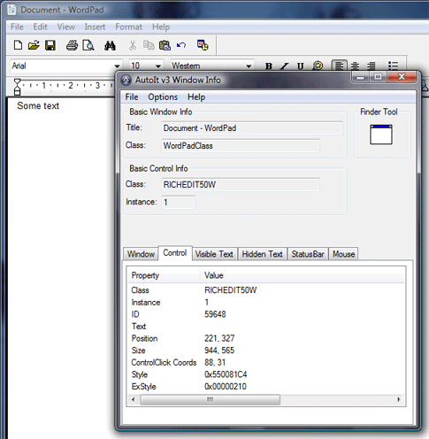

AutoIt v3 comes with a standalone tool called the AutoIt Window Info Tool (Program Files\AutoIt3\AU3Info.exe). AU3Info allows you to get information from a specified window that can be used to effectively automate it. Information that can be obtained includes:
To use AU3Info just run it (from the command line or Start menu). AU3Info will remain the top most window at all times so that you can read it. Once active move to the window you are interested in and activate it - the contents of AU3Info will change to show the information that is available. With the help of AU3Info you should be automating in no time!
When AU3Info is running you may want to copy text directly from it using CTRL-C and then paste it into your script to avoid spelling/case errors. For the tabs that have information in a list view (like the control information shown below) just double-click on an entry to copy it to the clipboard. This can be difficult when you want to capture pixel/mouse information as it keeps changing! To help with this you can "freeze" the output of AU3Info by pressing CTRL-ALT-F. Press the keys again to "unfreeze".
Here is an example of AU3Info in use with the Windows "WordPad" editor:
